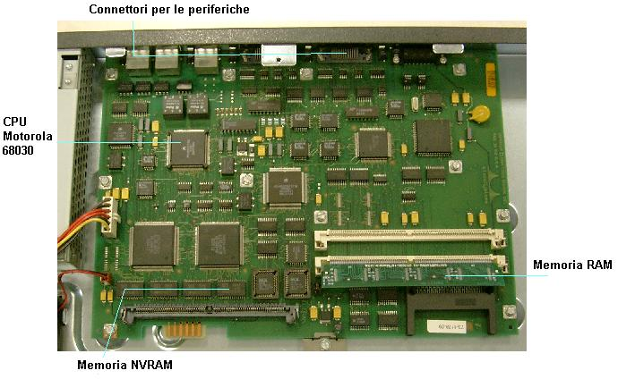

I Router Cisco
l'hardware, introduzione all'IOS, le modalità, l'ethernet, la seriale, il routing statico
Si intende fornire una descrizione dell'hardware, delle funzionalità e dei comandi principali per la configurazione del funzionamento del router Cisco.
INTRODUZIONE
Il router è un dispositivo hardware che lavora al 3° strato del modello OSI, ossia nel network layer. Esso è in grado di instradare i datagrammi IP verso l'host di destinazione, scegliendo il percorso migliore, la velocità più elevata o la rete più affidabile da utilizzare come prossimo salto. Il router è in grado di collegare assieme più reti fisiche e per tale motivo sta alla base del funzionamento dell'intera internet. In ogni router è presente una tabella di instradamento composta dagli indirizzi delle reti conosciute, nel processo di instradamento la scelta del prossimo router a cui inviare il datagramma IP sarà in funzione delle infirmazioni contenute in tale tabella..
IL PROTOCOLLO IP
Lo standard TCP/IP definisce un indirizzamento degli host di tipo gerarchico per favorire il processo di instradamento. Un indirizzo IP definisce una connessione virtuale ad una rete fisica da parte di un router o di un host ed è asseganto direttamente dall'amministratore della rete o per mezzo di un server DHCP. Il protocollo IP definito attraverso la RFC791 viene utilizzato nello strato di interrete del modello di riferimento di internet.
HARDWARE
Il router Cisco 2503 è un computer dedicato con Cpu Motorola 68030, memoria NVRAM dove conservare sistema operativo e tabelle di configurazione, memoria RAM dove vengono copiate le configurazioni e dove alloggiano i buffer per i dati in transito, le interfacce ai diversi protocolli e i connettori per le periferiche.

Sulla sinistra un transceiver che converte il segnale ethernet dal connettore AUI DB15 al connettore RJ45, sul pannello le porte Serial 0 (S0 di tipo DCE) che trasportano i segnali secondo lo standard V35 (anche se con connettore a 60 poli di tipo proprietario) e la porta Serial 1 ( S1 di tipo DTE ) , la presa RJ45 BRI per la linea ISDN, la presa RJ45 su cui escono i segnali RS232 per la console, la presa AUX di tipo RJ45 su cui si connette un modem attraverso il quale si può configurare il router.
Le prossime pagine : La prima configurazione, I due livelli di accesso, Lista dei comandi in modo utente, Lista dei comandi in modo privilegiato.